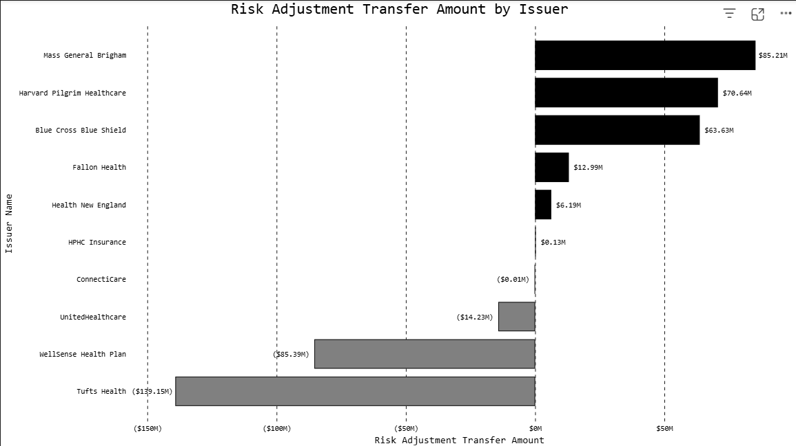

Featured Projects
3 selectedMassachusetts Risk Adjustment Transfers — 2024 Benefit Year
How $238.8M moved through Massachusetts' ACA risk adjustment program in 2024. Features the redistribution of dollars from insurers with healthier-than-average enrollees to insurers carrying a sicker, costlier population. Data collected from cms.gov

Large Group Medical Loss Ratio Comparison — MA, NJ, VA
A decade of insurer compliance, market consolidation, and consumer rebates across three states, 2014–2024. Data collected from cms.gov

Opioid Mortality Rate by County in Western Massachusetts
A data analysis of opioid (X42) mortality rates across Berkshire, Franklin, Hampshire, and Hampden counties from 2018–2023, compared against the Massachusetts state average. Includes Narcan distribution and poverty rate comparisons to explore what factors may explain differing outcomes across neighboring counties. Sources: CDC WONDER, BSAS, HDPulse.